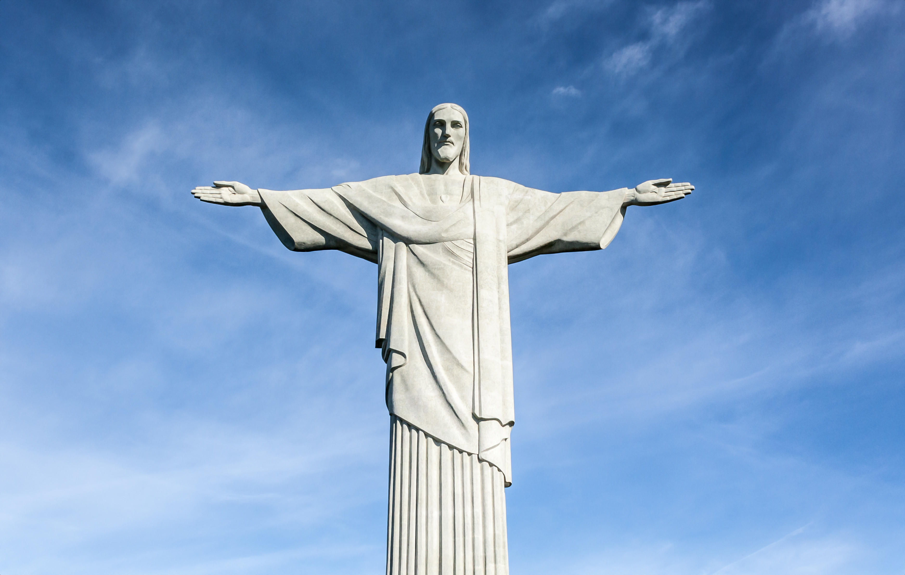
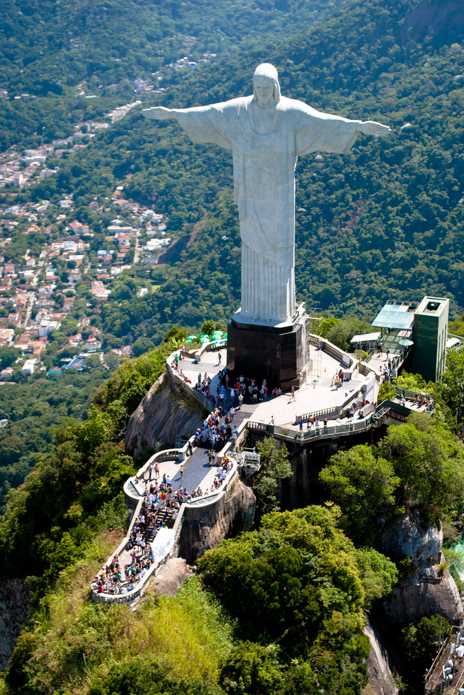

Christ the Redeemer, colossal statue of Jesus Christ at the summit of Mount Corcovado, Rio de Janeiro, southeastern Brazil. Celebrated in traditional and popular songs, Corcovado towers over Rio de Janeiro, Brazil’s principal port city. The statue of Christ the Redeemer was completed in 1931 and stands 98 feet (30 metres) tall, its horizontally outstretched arms spanning 92 feet (28 metres). The statue has become emblematic of both the city of Rio de Janeiro and the whole nation of Brazil.
The statue, made of reinforced concrete clad in a mosaic of thousands of triangular soapstone tiles, sits on a square stone pedestal base about 26 feet (8 metres) high, which itself is situated on a deck atop the mountain’s summit. The statue is the largest Art Deco-style sculpture in the world.
